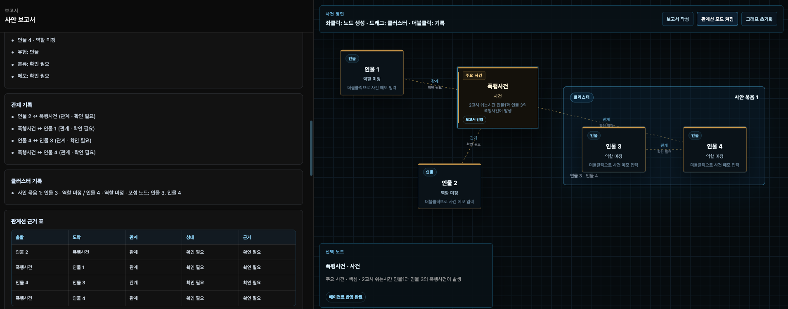

지도 경위, 위험 표현, 기록 포인트를 분리해 3가지 선택지로 정리합니다.
Tiny synthetic-data intelligence
초소형 최적화 AI 기반
초소형 최적화 AI 기반
분쟁대응 전략 에이전트
복잡한 민원, 학생지도, 내부 갈등 상황을 그대로 입력하면 ROOSY-X가 사실관계와 위험 표현을 분리하고, 바로 선택 가능한 3가지 대응 전략으로 압축합니다.
ICLR 2024 Tiny Paper
R2FM Workshop Accept
합성데이터 기반 AI 평가 연구
감정 표현을 줄이고 지도 경위와 안전조치만 답변
관리자 공유와 생활지도 기록을 먼저 확보
문자 보존, 목격자 확인, 공식 상담 전환
교원 분쟁대응
학폭, 교권침해, 악성민원, 학부모 문자 대응에서 안전한 문장과 기록 포인트를 분리합니다.
공공기관 민원 대응
개인 대응이 아닌 공식 채널, 절차, 기록 보존 중심의 대응 선택지를 제안합니다.
전략 3안 시뮬레이션
빠른 진정, 공식 절차 전환, 확대 대비처럼 선택 가능한 대응안을 장단점과 함께 제공합니다.
Example
긴 상황을 그대로 넣어도 됩니다
ROOSY-X는 법률 판단을 대신하지 않습니다. 대신 사실 중심 기록, 위험 문장 제거, 다음 확인 질문을 한 번에 정리합니다.
입력
오늘 3교시 후 학생이 친구를 밀어 넘어뜨렸고, 제가 복도에서 즉시 분리 지도했습니다. 그런데 학부모님이 “아이를 공개적으로 망신 줬다”고 문자를 보내셨습니다. 내일 답변해야 합니다.
ROOSY-X 출력
- 사실확인형
지도 경위와 안전조치만 차분히 안내 - 학교 공유형
관리자 공유 후 공식 상담으로 전환 - 확대 대비형
문자 보존, 목격자 확인, 기록 문안 정리
Research foundation
세계 학회에서 검토된 AI 평가 연구를 제품 언어로 압축했습니다
ROOSY-X는 거대한 시스템보다 빠르게 판단 보조에 필요한 구조를 뽑아내는 초소형 전략 에이전트를 지향합니다.

ICLR 2024 Tiny Paper
AI Gen Assessment
생성형 AI 데이터가 학습·평가 환경에서 어떻게 활용될 수 있는지 탐구한 연구 흐름을 서비스 설계에 반영했습니다.

ICLR 2024 R2FM Workshop
MKSL Dataset
지식 수준에 맞춘 응답 평가와 초소형 데이터셋 설계 철학을 분쟁대응 전략 생성에 연결했습니다.
Workflow
단순하지만 강하게 작동합니다
상황 입력
사실, 상대 문장, 목표, 기한을 자연어로 입력합니다.
위험 표현 분리
감정적 표현, 추정, 확인된 사실을 나누어 안전한 응답 구조를 만듭니다.
전략 3안 제시
바로 보낼 문장, 내부 기록 문장, 다음 확인 질문을 함께 제공합니다.
Operational memory
필요한 순간에는 대화 기록으로 이어집니다
로그인 후 작성한 전략 대화는 사안별 기록으로 남길 수 있습니다. 새로운 그래프 화면 없이도, 대화가 곧 대응 브리프가 됩니다.

분쟁대응 전략 에이전트